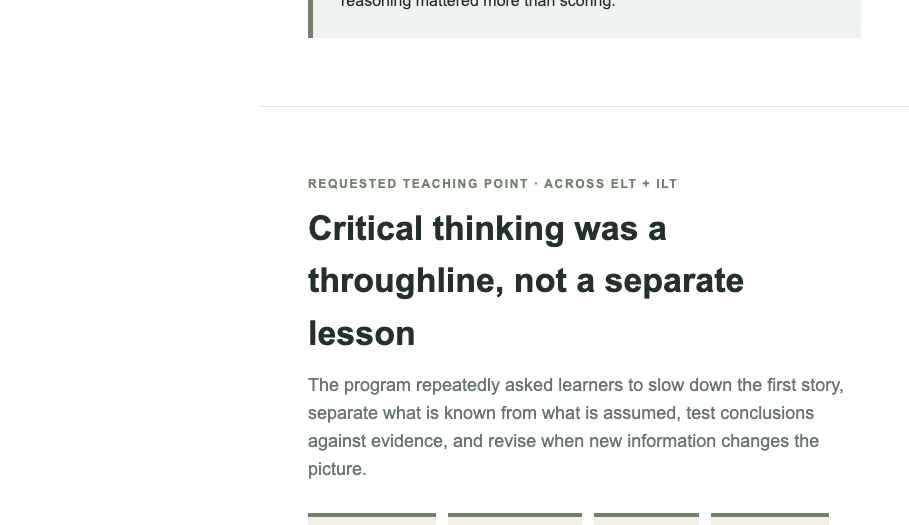

Digital learning
Evidence before conclusions.
The learner is asked to distinguish evidence from assumption and challenge an early interpretation before moving forward.
Faithfulness rule: layout and interaction intent stay aligned to the original deliverable; only identifying content and palette are changed.